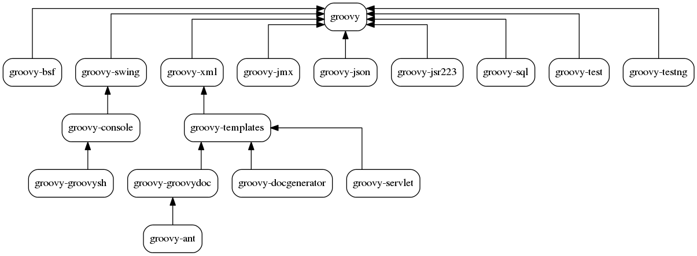

Groovy 2 update
Greach, Madrid, Spain
Cédric Champeau, SpringSource
Jan 2013 25th
About me
Past : Groovy contributor
- Bugfixes
- Modules: @Bytecode AST xform, GFreeMarker
- Core: compilation customizers, @xInterrupt, ...
- Used Groovy as a DSL for natural language processing
Present: Core Groovy committer
- Working on bugfixes but main focus on Groovy 2.0
- Static type checking
- Static compilation
Follow me
Modularity
- Groovy’s « all » JAR weighs in at 6 MB
- Nobody needs everything
- Provide a smaller core
- Template engine, Ant scripting, Swing UI building...
- Provide hooks for setting up DGM methods, etc.
- and several smaller JARs per feature
The new JARs
- A smaller JAR: 3MB
- Modules

Extension modules
- idea: bring StringUtils as a first-class citizen
- provide your own extensions to the GDK
- call them from Groovy code
Extension modules
- Support for static methods too
Extension module descriptor
- Descriptor in: META-INF/services/org.codehaus.groovy.runtime.ExtensionModule
- Real-life example: Tim Yate's
Groovy 2
JDK 7 enhancements
JDK 7 enhancements: Binary literals
- We had decimal, octal and hexadecimal
notations for number literals
- We can now use binary representations too
JDK 7 enhancements: Underscores in literals
- Now we can also add underscores
in number literals for more readability
JDK 7 enhancements: Multicatch
- One block for multiple exception caught
Groovy 2
InvokeDynamic support
InvokeDynamic
- Groovy 2.0 supports JDK 7’s invokeDynamic
- compiler has a flag for compiling against JDK 7
- might use the invokeDynamic backport for < JDK 7
- Benefits
- more runtime performance!
- at least as fast as current « dynamic » Groovy
- in the long run, will allow us to get rid of code!
- call site caching, thanks to MethodHandles
- metaclass registry, thanks to ClassValues
- will let the JIT inline calls more easily
Groovy 2
Static type checking
Static type checking
Goal
- Find errors at compile time (fail early)
- because lots of code do not use dynamic features of Groovy
- so many bugs can be discovered before production
- Make java developers even happier
Turn the compiler grumpy
- Report typos
- missing method/property
- Extension methods (aka DefaultGroovyMethods)
- Type check assignments
- Perform type inference
- method/closure return type inference
- generics type inference
Static type checking: typos
Static type checking: assignments
Static type checking: return types
Static type checking: type inference
Static type checking: mixing static and dynamic
Static type checking: instanceof
Static type checking: lowest upper bound
Represents a "common super type" that may not exist as a real class/interface
List<Comparable & Serializable>
Static type checking: flow typing
Static type checking shouldn’t complain even for bad coding practicies which work without type checks
STC gotchas: dynamic vs static
- Type checking works at compile-time
- adding @TypeChecked doesn’t change behavior
- do not confuse with static compilation
- Most dynamic features cannot be type checked
- metaclass changes, categories
- dynamically bound variables (ex: script’s binding)
- But compile-time metaprogramming works
- as long as proper type information is defined
STC gotchas: closure argument types
- Type descriptors not sufficient to describe closure arguments
- Enhancement should be proposed for Groovy 2.2
STC gotchas: closure shared variables 1/2
- in general, you cannot know when a closure will be called
- only method calls on LUB should be allowed
STC gotchas: closure shared variables 2/2
- in general, you cannot know when a closure will be called
- only method calls on LUB should be allowed
Groovy 2
Static compilation
Static compilation
- Given your Groovy code can be type checked...
- we can as well compile it « statically »
- ie. generate the same byte code as javac
- Also interesting for those stuck in JDK < 7
- to benefit from performance improvements
Only change required: @TypeChecked to @CompileStatic
Static compilation: pros
You gain
- Type safety
- thanks to static type checking
- static compilation builds upon static type checking
- Faster code
- as close as possible to Java’s performance
- Code immune to « monkey patching »
- metaprogramming badly used can interfere with framework code
- Smaller bytecode size
Static compilation: cons
But you loose
- Dynamic features
- metaclass changes, categories, etc.
- Dynamic method dispatch
although as close as possible to « dynamic » Groovy
Full InvokeDynamic support
- In Groovy 2.0, not all call paths
- were going through invoke dynamic calls
- essentially method calls only
- still used call site caching techniques
- On JDK 7 with the « indy » JAR, Groovy 2.1 uses invoke dynamic everywhere
- On JDK < 7, still uses call site caching
@DelegatesTo
- Static type checking works nicely for certain Domain-Specific Languages
- command chains, extension methods, etc.
- But for changes of delegation within closures, it’s not helping
- often used by DSLs like within Gradle
- also interesting for IDE/documentation
Enters @DelegatesTo!
@DelegatesTo
Define a class that has a foo() method
Define a with method that does a "reversed with"
Use it
Will IDE know about foo()? Would the type checker know?
@DelegatesTo
- Solution
- Annotate with @DelegatesTo
- Specify the delegate type as argument
@DelegatesTo
- Solution 2
- Annotate with @DelegatesTo
- Set the delegation target
@DelegatesTo: advantages
- For DSLs using Groovy closure delegation
- Great for...
- documenting APIs
- IDE integration
- code completion, code navigation...
- working nicely with static type checking and static compilation
- See more tomorrow! (10:15, Type checking your DSLs)
Alias annotations
- Tired of annotation hell?
- Want to create custom annotation combining others?
- Still want to be able to change parameters?
Alias annotations
The verbose declaration
Alias annotations
- Replaces alias with target annotations at compile time
- Alias is not visible anymore at runtime
- Ability to create custom "expanders" for complex aliases
As an example, Groovy 2.1 includes @CompileDynamic as an alias for @CompileStatic(TypeCheckingMode.SKIP)
Groovy 2.1
Compilation configuration
Taking control of your Groovy
- Groovy 1.8 introduced compilation customizers
- add imports, AST xforms, secure the AST...
- With static type checking and static compilation, we received feedback from people wanting them applied « by default »
- Make available to groovyc what was available to GroovyShell or GroovyScriptEngine
- with a configuration script
- groovyc -configurator compConf.groovy Foo.groovy
Compilation configuration script
The configuration script gives you access to CompilerConfiguration
The CompilationCustomizerBuilder is available outside of this context
Groovy 2.1
Type checking extensions
Type checking extensions
- Plug into the type checking system
- Very interesting for DSLs
- Make the compiler smarter!
Extensive description tomorrow, "Type checking your DSLs" at 10:15
Type checking extensions: example
Take this code
- Can you make it pass type checking?
- Ensure that "b" is a point in line(b,c)
- Handle forward references
- Hint: answer is yes!
Type checking extensions
- Makes use of an event-based API
- ex: onMethodSelection, unresolvedVariable, ...
- Allows you to make the compiler even smarter than Java is!
←
→
/
#